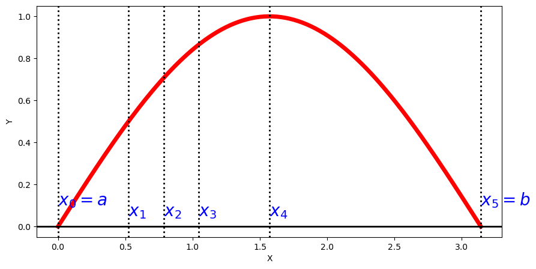
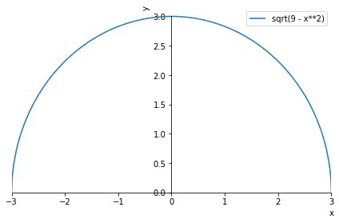

4.2. Riemann integration#
Let \([a,b] \subset \mathbb R\) be an interval and let \(\,f : [a,b] \longrightarrow \mathbb R\) be a bounded function.
First, we define the concept of a partition:
Definition (Partition of an interval)
A partition \(\mathcal{P}\) of \([a,b]\) is a set of points \( \left\{ x_0, x_1, \ldots, x_n \right\} \) satisfying:
Given a partition \(\mathcal P\), we denote
4.2.1. Riemann sums#
Definition (Riemann sums)
The upper Riemann sum of the function \(f\) relative to the partition \(\mathcal P\) is defined as:
\[ U (\mathcal P,f) = \overset{n}{\underset{i=1}{\sum}} \, M_i (x_i - x_{i-1}). \]The lower Riemann sum of the function \(f\) relative to the partition \(\mathcal P\) is defined as:
\[ L (\mathcal P,f) = \overset{n}{\underset{i=1}{\sum}} \, m_i (x_i - x_{i-1}). \]


Example
Given the partition \(\mathcal{P} = \left\{0, \frac{\pi}{6}, \frac{\pi}{4}, \frac{\pi}{3}, \frac{\pi}{2}, \pi \right\}\) on the interval \([0,\pi]\) and the function \(f(x)=\sin x\), compute the upper Riemann sum \(U (\mathcal P,f)\).
Solution:
We plot the sine function on the interval \([0,\pi]\) and the partition \(\mathcal{P}\) with Matplotlib:
import numpy as np
import matplotlib as mp
import matplotlib.pyplot as plt
xx = np.linspace(0, np.pi, 200)
yy = np.sin(xx)
x0=0; x1=np.pi/6; x2=np.pi/4; x3=np.pi/3; x4=np.pi/2; x5=np.pi
fig = plt.figure(figsize = (10,5))
#plt.ylim(-5,20)
plt.plot(xx, yy, c='r', lw='5', label = '$f=\sin(x)$')
plt.ylabel('Y', fontsize=10)
plt.xlabel('X', fontsize=10)
plt.axhline(y=0., c='black', lw='2')
plt.axvline(x=x0, c='black', lw='2', ls=':')
plt.text(x0, 0.1, '$x_{0}=a$', c='b', fontsize=20)
plt.axvline(x=x1, c='black', lw='2', ls=':')
plt.text(x1, 0.05, '$x_{1}$', c='b', fontsize=20)
plt.axvline(x=x2, c='black', lw='2', ls=':')
plt.text(x2, 0.05, '$x_{2}$', c='b', fontsize=20)
plt.axvline(x=x3, c='black', lw='2', ls=':')
plt.text(x3, 0.05, '$x_{3}$', c='b', fontsize=20)
plt.axvline(x=x4, c='black', lw='2', ls=':')
plt.text(x4, 0.05, '$x_{4}$', c='b', fontsize=20)
plt.axvline(x=x5, c='black', lw='2', ls=':')
plt.text(x5, 0.1, '$x_{5}=b$', c='b', fontsize=20)
plt.show()

We see that the function \(\sin x\) is increasing on the interval \([0,\frac{\pi}{2}]\) and decreasing on \([\frac{\pi}{2},\pi]\), so:
\(\max\left\{\sin(x), x\in[0,\frac{\pi}{6}]\right\}=\sin\left(\frac{\pi}{6}\right)=\frac12\),
\(\max\left\{\sin(x), x\in[\frac{\pi}{6},\frac{\pi}{4}]\right\}=\sin\left(\frac{\pi}{4}\right)=\frac{\sqrt{2}}{2}\),
\(\max\left\{\sin(x), x\in[\frac{\pi}{4},\frac{\pi}{3}]\right\}=\sin\left(\frac{\pi}{3}\right)=\frac{\sqrt{3}}{2}\),
\(\max\left\{\sin(x), x\in[\frac{\pi}{3},\frac{\pi}{2}]\right\}=\sin\left(\frac{\pi}{2}\right)=1\),
\(\max\left\{\sin(x), x\in[\frac{\pi}{2},\pi]\right\}=\sin\left(\frac{\pi}{2}\right)=1\).
Therefore:
4.2.2. Definition of Riemann integrability#
Definition
A bounded function \(f\) is said to be Riemann integrable on \([a,b]\) if and only if:
It is written \(f\in{\cal R}[a,b]\).
Geometric interpretation:
If \(f(x)\) is a positive function on an interval \([a,b]\), its Riemann integral, \(\displaystyle\int_a^bf(x)\,dx\), represents the area bounded by the curve \(y = f(x)\), the line \(y = 0\), and the lines \(x = a\) and \(x = b\).
Example
Compute \(\int_{-3}^3 \sqrt{9-x^2} dx\).
Solution:
Let us plot the function \(\sqrt{9-x^2}\) on the interval \([-3,3]\) with Sympy:
p = sp.plot(sp.sqrt(9-x**2), (x, -3, 3), show=False)
p.line_color='r'
p.xlabel='x'
p.ylabel='y'
p.legend=True
p.show()

We see that on the interval \([-3,3]\) the function describes a semicircle of radius \(3\). From geometry we know that the area of a circle is \(A = \pi r^2 = \pi \, 3^2 = 9 \pi\). Thus, the area of the semicircle is \(\frac{9\pi}{2}\), and therefore
4.2.3. Properties of the Riemann integral#
Property (Riemann integrability)
Every continuous function on \([a,b]\) is integrable on \([a,b]\) (that is: \(f\in\mathcal{C}^{0}[a,b]\Rightarrow f\in\mathcal{R}[a,b]\)). Consequently, every differentiable function is integrable.
Every monotone and bounded function on \([a,b]\) is integrable on \([a,b]\).
Every bounded function on \([a,b]\) with only a finite number of discontinuities on that interval is integrable on \([a,b]\).
Let \(f\) be a Riemann integrable function on \([a,b]\) such that:
\[m \leq f(x) \leq M , \quad \forall x \in [a,b].\]If \(g\) is continuous on \([m,M]\), then the composite function \(g \circ f\) is integrable on \([a,b]\).
Property (Arithmetic properties of Riemann integration)
Let \(f, g \in {\cal R}[a,b]\). Then:
\(\forall \alpha \in \mathbb R\), \(\alpha f\in {\cal R}[a,b]\), and the following holds:
\[ \int_a ^b (\alpha\, f)(x) \,dx = \alpha \int_a ^b f(x) \,dx. \]\(f \pm g \in {\cal R}[a,b]\) and the following holds:
\[ \int_a ^b (f \pm g)(x) \,dx = \int_a ^b f(x) \,dx \pm \int_a ^b g(x) \,dx. \]\(fg \in {\cal R}[a,b]\).
Property (Additivity on intervals)
Let \(f \in {\cal R}[a,b]\) and suppose that \(c\) is a point in the interval \((a,b)\) (that is, \(a < c < b\)).
Then \(f \in {\cal R}[a,c]\) and \(f \in {\cal R}[c,b]\), and the following holds:
Property (Bounds)
Let \(f, g \in {\cal R}[a,b]\).
If \(f \leq g\) on \([a,b]\), then \(\displaystyle\int_a ^b f(x) \,dx \leq \int_a ^b g(x) \,dx\).
If \(m\leq f(x) \leq M\), \(\forall x \in [a,b]\), then
\[m(b-a)\leq \int_a ^b f(x) \,dx \leq M (b - a).\]\(|f| \in {\cal R}[a,b]\), and the following holds:
\[ | \int_a^b f(x) \,dx | \leq \int_a^b |f(x)|\,dx. \]
4.2.4. Some links to go further#
If this has sparked your curiosity and you want to expand your knowledge of the Riemann integral, here are some links that we find interesting:
On the page of Silvestre Paredes Hernández, professor at the Universidad Politécnica de Cartagena, we find this complete chapter with everything you need to know about the Riemann integral, the Fundamental Theorem of Calculus, improper integration, and applications of the integral: https://www.dmae.upct.es/~paredes/mat1giqi/apuntes/Tema12.pdf.
From the personal page of Jesús María Sánchez Montero, professor at the University of Seville: https://personal.us.es/jsmonter/jes1/pdf/intedef.pdf. A very attractive PDF, with solved exercises and additional information.
On the page of Benito J. González Rodríguez, professor at the University of La Laguna, we find the following document, which contains a very complete introduction to Riemann integration: https://bjglez.webs.ull.es/06-integral.pdf. For example, you can see the proof that monotone functions are Riemann integrable.